- / -
Sentinel
Analisi
Descrizione requisiti
Sentinel è un sistema di simulazione che consente di modellare magazzini virtuali gestiti da flotte di robot autonomi e di analizzarne il comportamento durante l’esecuzione di attività di spostamento e trasporto di merci.
Per ciascun magazzino l’utente può configurare uno o più scenari operativi, specificando i robot disponibili e l’insieme delle missioni che questi devono portare a termine, oltre alle politiche gestionali che regolano l’assegnazione delle missioni ai robot, il calcolo dei loro percorsi e la risoluzione dei conflitti che possono sorgere fra loro.
Durante la simulazione, l’utente può osservare l’evoluzione dello scenario e controllarne l’avanzamento. Al termine, un report descrive i risultati dell’esecuzione mediante indicatori relativi al completamento delle missioni, ai tempi, alle distanze percorse e all’utilizzo dei robot.
Requisiti di business
- RB-01 Modellazione di configurazioni alternative: il sistema deve consentire all’utente di rappresentare magazzini diversi e di definire, per uno stesso magazzino, scenari con flotte, missioni e politiche gestionali diverse.
- RB-02 Osservazione del comportamento: Il sistema deve consentire di esaminare come le missioni vengono assegnate ed eseguite e come le interazioni tra robot influenzano l’avanzamento della simulazione.
- RB-03 Valutazione dei risultati: Il sistema deve fornire indicatori quantitativi che permettano all’utente di confrontare gli esiti di scenari differenti.
Il risultato atteso è la possibilità di svolgere un ciclo completo di configurazione, simulazione e valutazione. L’individuazione della configurazione preferibile spetta all’utente, sulla base degli indicatori rilevanti per il proprio confronto.
Requisiti funzionali
Utente
RFU-01 Creazione del magazzino: l’utente deve poter creare un magazzino specificandone l’identificatore e dimensioni e configurare le celle come pavimenti, scaffali o zone di carico. Deve poter applicare modifiche a singole celle o ad aree rettangolari e rimuovere le celle selezionate. La rimozione di una cella comporta l’automatica invalidazione degli scenari che su tale cella avevano predisposto robot o missioni.
RFU-02 Costi di attraversamento: l’utente deve poter specificare un costo temporale non negativo per le celle su cui è possibile transitare.
RFU-03 Configurazione di un magazzino attraverso diversi scenari: l’utente deve avere la possibilità di configurare più scenari operativi di uno stesso magazzino.
RFU-04 Configurazione della flotta: l’utente deve poter aggiungere e rimuovere robot dallo scenario. Per ciascun robot deve poter scegliere la tipologia (drone, carrier ed heavy carrier) e la loro posizione iniziale.
RFU-05 Configurazione delle missioni: l’utente deve poter aggiungere e rimuovere missioni di spostamento e di consegna. Deve poter specificare la destinazione dello spostamento oppure lo scaffale di origine e la zona di carico della consegna, oltre a scadenza e priorità.
RFU-06 Scelta delle politica di calcolo del percorso: l’utente deve poter scegliere quale metrica minimizzare (distanza, tempo e numero di ostacoli) per calcolare il percorso ottimale di un robot verso la destinazione.
RFU-07 Scelta della politica di assegnazione delle missioni: l’utente deve poter scegliere quale politica di assegnazione utilizzare nello scenario (vicinanza, ciclica, casuale e al robot con meno carico di lavoro) per gestire come le missioni vengono allocate ai robot.
RFU-08 Scelta della politica di gestione delle collisioni: l’utente deve poter scegliere quale politica di gestione per le collisioni adottare, combinando un’azione (attesa, ricalcolo del percorso) con un criterio di selezione che decide quali robot eseguono l’azione (casuale, priorità, tempo rimanente).
RFU-09 Riutilizzo delle configurazioni: l’utente deve poter salvare e riaprire magazzini e scenari dal file system.
RFU-10 Avvio della simulazione: l’utente deve poter avviare una simulazione scegliendo quale scenario eseguire e impostare facoltativamente un limite massimo di passi di esecuzione.
RFU-11 Osservazione della simulazione: l’utente deve poter consultare l’esecuzione della simulazione, osservando i comportamenti dei robot, quali percorsi vengono scelti, lo stato delle missioni e gli eventi accaduti al passo precedente.
RFU-12 Controllo della simulazione: durante una simulazione, l’utente deve poter sospendere e riprendere l’avanzamento automatico, avanzare di un passo e consultare il passo precedente.
RFU-13 Consultazione dei risultati: Alla conclusione dell’esecuzione, il sistema deve presentare il report contenente le statistiche e l’utente può consultarle.
RFU-14 Interruzione volontaria: in qualsiasi momento l’utente deve poter ritornare al menu principale.
Sistema
RFS-01 Validità del posizionamento: i robot devono essere collocati inizialmente su celle attraversabili. Due robot non possono condividere la posizione iniziale e i loro identificatori devono essere distinti all’interno dello scenario. Un inserimento non valido deve essere rifiutato senza modificare lo scenario.
RFS-02 Validità delle missioni: gli identificatori delle missioni devono essere distinti all’interno dello scenario. La destinazione di uno spostamento deve essere attraversabile; una consegna deve riferirsi all’oggetto associato allo scaffale di origine e avere come destinazione una zona di carico. La priorità deve essere un intero compreso tra 1 e 10, con valori maggiori corrispondenti a priorità superiori.
RFS-03 Capacità dei robot: i droni devono accettare esclusivamente missioni di spostamento. I trasportatori (carrier) devono poter accettar anche missioni di trasporto merce e consentire il prelievo di un oggetto solo quando il carico risultante non supera la loro capacità. Le missioni assegnate a ciascun robot devono essere eseguite nell’ordine della relativa coda. Le caratteristiche di ogni classe di robot sono:
- Drone: nessuna capacità di carico, un massimo di 3 missioni assegnabili contemporaneamente e movimenti istantanei, privi di tempi di attesa oltre al costo della cella successiva.
- Carrier: possono caricare al massimo 50 unità di peso, possono accettare fino a 5 missioni contemporaneamente ma sono più lenti dei droni (devono attendere 1 passo in più per ogni cella rispetto ad esso).
- Heavy Carrier: possono caricare al massimo 200 unità di peso ma possono accettare solo 1 missione alla volta e sono molto lenti (devono attendere 2 passi in più per ogni cella rispetto al drone)
RFS-04 Assegnazione delle missioni: il sistema deve scegliere tra i robot che possono accettare la missione secondo la politica configurata: vicinanza, selezione ciclica, minor carico di lavoro oppure selezione casuale. In assenza di un candidato, la missione deve rimanere in attesa, continuando a essere soggetta alla propria scadenza. Il carico di lavoro è il numero di missioni assegnate, inclusa quella corrente. Se un robot non ha abbastanza capacità di carico per trasportare un oggetto, allora non può accettare la missione.
RFS-05 Calcolo dei percorsi: i percorsi devono attraversare esclusivamente celle consentite e raggiungere la destinazione dell’azione corrente. Per il prelievo, la destinazione deve essere un punto di interazione dello scaffale. Ogni metrica permette di ottenere un percorso ottimale rispetto ad un punteggio. Le metriche disponibili devono considerare rispettivamente il numero di passi (distanza), la somma dei costi temporali (tempo) oppure una penalizzazione della vicinanza agli ostacoli (ostacoli).
RFS-06 Gestione dei conflitti: il sistema deve gestire sia i tentativi di raggiungere la stessa cella sia i tentativi di scambio reciproco di posizione. Nei conflitti in cui è possibile scegliere una precedenza, il criterio deve essere casuale, basato sulla priorità più alta oppure sulla scadenza più vicina. I robot che cedono devono attendere o cercare un percorso alternativo, secondo la politica configurata; se il percorso alternativo non è disponibile, devono attendere.
RFS-07 Esecuzione delle missioni: una missione di spostamento deve completarsi quando il robot raggiunge la destinazione. Una consegna deve completarsi dopo il prelievo e il successivo deposito dell’oggetto.
RFS-08 Scadenze: la scadenza deve rappresentare il numero di tick rimanenti dalla creazione della missione. A ogni passo il sistema deve aggiornare le scadenze prima di eseguire le nuove azioni. Una missione il cui tempo è esaurito deve fallire.
RFS-09 Stati delle missioni: il sistema deve distinguere missioni in attesa di assegnazione, assegnate, completate e fallite. Una missione rimane assegnata fino a che non raggiunge uno stato terminale. Completamento e fallimento sono stati terminali.
RFS-10 Stati dei robot: il sistema deve distinguere robot inattivi, pronti a svolgere una missione, in movimento e temporaneamente in attesa a causa di un conflitto.
RFS-11 Terminazione: una simulazione deve terminare quando tutte le missioni hanno raggiunto uno stato terminale oppure quando viene raggiunto il limite temporale impostato. Al raggiungimento del limite, le missioni ancora attive devono essere dichiarate fallite.
RFS-12 Navigazione temporale: l’arretramento consente di consultare gli stati precedentemente generati. Riprendendo l’avanzamento, si riparte dal punto in cui ci si trova, ripercorrendo la cronologia esistente fino all’ultimo stato calcolato per poi proseguire la simulazione.
RFS-13 Criterio di vicinanza: i vicini di una cella sono le celle poste in alto, in basso, a sinistra e a destra di essa. Le celle diagonali non sono considerate vicine.
RFS-13 Statistiche: le statistiche devono includere:
- Durata della simulazione
- Numero di robot che compongono la flotta
- Numero di missioni totali, completate e fallite
- Percentuale di missioni completate su totale
- Produttività complessiva, intesa come il rapporto tra il numero di missioni completate e il numero di passi eseguiti
- Produttività per robot, intesa come produttività complessiva divisa per il numero di robot presenti nello scenario.
- Tempo medio trascorso dall’assegnazione al completamento delle missioni
- Tempo massimo trascorso dall’assegnazione al completamento delle missioni
- Distanza totale percorsa
- Distanza per missione completata, intesa come rapporto tra la distanza totale percorsa e il numero di missioni completate.
- Robot più utilizzati, intesi come quelli a cui sono state assegnate più missioni
- Robot meno utilizzati, intesi come quelli a cui sono state assegnate meno missioni
Requisiti non funzionali
- RNF-01 Portabilità: l’applicazione deve essere eseguibile su sistemi Windows, Linux e MacOs.
Requisiti di implementazione
- RI-01 Linguaggio di programmazione: il sistema deve essere sviluppato in linguaggio Scala.
- RI-02 Copertura dei test: il sistema deve avere una copertura di test superiore al 70% del codice sorgente.
Modello del dominio
Il magazzino virtuale (Figura ) è modellato come una griglia bidimensionale di celle, dove ogni cella rappresenta una porzione discreta di spazio. Ogni cella appartiene a una delle seguenti tipologie:
- Pavimento: cella libera su cui i robot possono transitare.
- Scaffale: cella non attraversabile ma interagibile presso dei punti di interazione adiacenti. I robot possono quindi fermarsi presso di essa per prelevare la merce.
- Zona di carico: cella di percorso speciale dedicata alle operazioni di scarico merce.
Ogni cella attraversabile ha un costo associato, che rappresenta il tempo necessario per attraversarla.
Una missione (Figura ) rappresenta un’attività assegnabile ai robot all’interno del magazzino. Ogni missione è definita da:
- Obbiettivo:
- spostamento: il robot deve recarsi verso un punto specifico del magazzino.
- prelievo: il robot deve prelevare un oggetto da uno scaffale.
- deposito: il robot deve trasportare un oggetto verso una zona di carico.
- Priorità: un valore numerico, da 1 a 10, che indica l’importanza della missione rispetto alle altre, dove 1 è il minimo e 10 è il massimo.
- Scadenza: numero di unità temporali di simulazione rimanenti entro cui completare la missione.
- Stato: il ciclo di vita di una missione attraversa i seguenti stati:
- in attesa di essere assegnata.
- assegnata ad un robot.
- completata con successo.
- fallita perché non completata entro la scadenza.
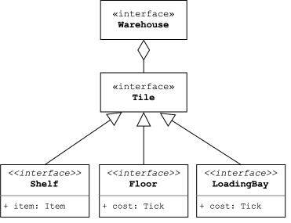
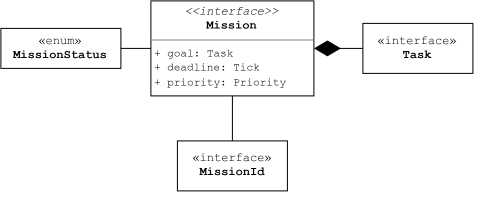
Un robot (Figura ) è un agente mobile autonomo che opera all’interno del magazzino per eseguire missioni. Ogni robot è definito da:
- Posizione: cella del magazzino in cui si trova attualmente.
- Stato: un robot può trovarsi in uno dei seguenti stati:
- inattivo, ovvero in attesa di una nuova missione.
- pronto ad eseguire una missione assegnata.
- in movimento lungo un percorso.
- in attesa che il percorso bloccato diventi nuovamente transitabile.
- Classe: esistono tre tipologie di robot:
- Drone: movimento veloce ma incapace di trasportare oggetti.
- Trasportatore leggero: media velocità e capace di trasportare oggetti leggeri.
- Trasportatore pesante: lento e capace di trasportare qualsiasi oggetto.
I robot sono dotati di una coda con la quale memorizzare nuove missioni anche mentre ne stanno eseguendo una. I robot che hanno una coda piena non possono accettare altre missioni finché non completano quella in corso.
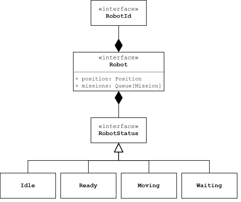
Uno scenario è una configurazione operativa completa del magazzino e definisce tutti gli elementi necessari per eseguire una simulazione. Ogni scenario specifica:
- l’elenco dei robot presenti, ciascuno con la propria posizione iniziale e classe di appartenenza;
- l’insieme delle missioni da completare durante la simulazione.
- le politiche gestionali che determinano il comportamento del sistema:
- assegnazione delle missioni
- calcolo dei percorsi
- gestione dei conflitti tra robot
Tra le politiche di assegnazione delle missioni (Figura ) si distinguono:
- Vicinanza: la missione viene assegnata al robot più vicino al punto di origine della missione.
- Ciclica: le missioni vengono assegnate ai robot in ordine ciclico, indipendentemente dalla loro posizione.
- Carico di lavoro: le missioni vengono assegnate al robot con il minor numero di missioni in coda.
- Casuale: le missioni vengono assegnate ad un robot scelto casualmente tra quelli disponibili.
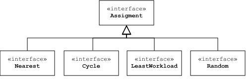
Il sistema offre diverse strategie per il calcolo del percorso ottimale (Figura ), ciascuna pensata per minimizzare una specifica metrica nel tragitto tra la posizione attuale del robot e la destinazione.
Tra le metriche disponibili si distinguono:
- Distanza: individua il percorso con il minor numero di celle da attraversare, a prescindere dai relativi costi.
- Tempo: individua il percorso più rapido considerando i costi di attraversamento delle singole celle.
- Ostacoli: individua il percorso che transita vicino al minor numero di ostacoli, per evitare collisioni irrisolvibili.
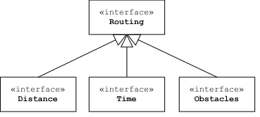
Infine, si distinguono le diverse politiche di gestione dei conflitti tra robot. I conflitti si verificano in due casi:
- collisione indiretta: quando due o più robot vogliono muoversi nella stessa cella.
- collisione diretta: quando un robot vuole muoversi nella cella occupata da un robot stazionario o quando due robot vogliono scambiarsi di posto.
Ogni politica di gestione specifica come risolverli, combinando un’azione con un criterio di selezione. Dai robot coinvolti in una collisione ne viene scelto uno che potrà muoversi (se possibile), mentre gli altri dovranno eseguire un’azione sostitutiva (Figura ):
- Attesa: vengono bloccati finché la cella non sarà nuovamente libera.
- Ricalcolo del percorso: Ricalcolano il percorso (se esiste) evitando la cella in cui si sarebbero dovuti muovere, in quanto verrà occupata da un altro robot.
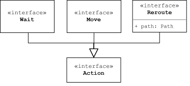
Criteri di selezione (Figura ):
- Casuale: il robot che vince è scelto casualmente.
- Priorità: vince il robot con la missione di priorità più alta.
- Tempo rimanente: vince il robot con la missione più vicina allo scadere del tempo.
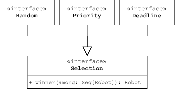
Per simulazione si intende una particolare esecuzione di uno scenario. In genere, una simulazione termina quando tutte le missioni hanno terminato la loro esecuzione. È possibile, tuttavia, specificare il limite massimo di tempo, causando l’interruzione prematura dell’esecuzione.
A fine della simulazione il sistema produce le statistiche sulle prestazioni dello scenario, includendo:
- Durata della simulazione
- Numero di robot che compongono la flotta
- Numero di missioni totali, completate e fallite
- Percentuale di missioni completate su totale
- Produttività complessiva (throughput)
- Produttività per robot (throughput per robot)
- Tempo medio trascorso dall’assegnazione al completamento delle missioni
- Tempo massimo trascorso dall’assegnazione al completamento delle missioni
- Distanza totale percorsa
- Distanza per missione completata
- Robot più utilizzati
- Robot meno utilizzati
In Figura viene mostrato il diagramma UML del dominio applicativo semplificato.
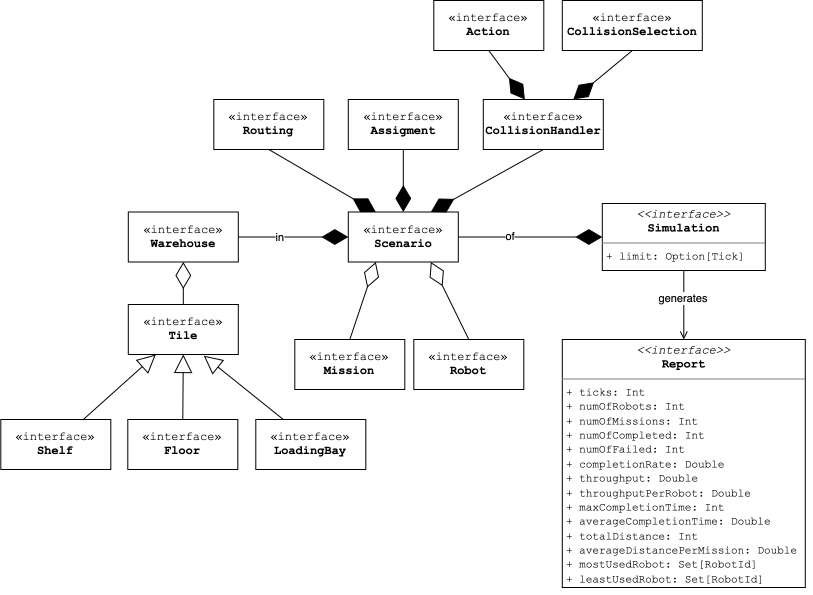
Design
Architettura del sistema
In è rappresentato lo schema UML dell’architettura del simulatore.
L’architettura di Sentinel segue il pattern Model-View-Controller (MVC) e organizza il sistema in tre livelli principali: core, control e boundary.
Il package core costituisce il model dell’applicazione: rappresenta magazzini, robot, missioni e scenari e definisce le regole della simulazione, comprese le politiche di assegnazione, calcolo dei percorsi e gestione dei conflitti. L’avanzamento del dominio avviene per passi discreti, indipendentemente dalla frequenza con cui vengono eseguiti e dalla loro rappresentazione grafica.
Il package control comprende i controller, che interpretano i comandi dell’utente e coordinano le operazioni sul modello. Gli Editor gestiscono la costruzione e la modifica di Warehouse e Scenario, mentre Engine regola l’esecuzione temporale di Simulation, consentendo di sospenderla, riprenderla e consultarne i passi.
Il package boundary raccoglie le componenti di interazione con l’esterno. Nell’interfaccia grafica, il ruolo di view è suddiviso tra View, responsabile della presentazione dello stato, e Interactive, che raccoglie i comandi dell’utente. Il Toolkit fornisce la finestra e le viste necessarie attraverso contratti indipendenti dallo specifico framework grafico.
Per integrare le interazioni dell’utente, l’esecuzione temporizzata e gli aggiornamenti dell’interfaccia, il progetto sfrutta le astrazioni funzionali e reattive fornite da Monix. Tali astrazioni sono principalmente due: Observable, che rappresenta flussi di eventi o stati, e Task, che descrive operazioni differibili, componibili ed eseguibili in modo asincrono.
Il collegamento tra le componenti è affidato ad Application, che compone i Task per coordinare il ciclo di vita dell’applicazione. Questa composizione permette di organizzare la navigazione tra le viste, sequenziare le operazioni e gestire il completamento o l’interruzione delle attività, garantendo il rilascio delle risorse.
Durante la modifica di Warehouse o di Scenario, Application collega il flusso di comandi proveniente da Interactive verso Editor. Quest’ultimo li interpreta e restituisce un Observable contenente gli aggiornamenti di stato, a cui la View si sottoscrive per aggiornare la grafica.
Durante la simulazione, Application inoltra invece i comandi ad Engine, fornendogli la funzione di rendering da invocare ogni volta che un nuovo passo di simulazione (StepResult) è disponibile nel flusso (Observable[StepResult]).
Il Task di esecuzione della simulazione viene coordinato con quello dedicato all’attesa della chiusura della vista: al completamento della simulazione, il Report generato viene mostrato all’interno della vista delle statistiche, se invece l’utente ritorna al menu principale prima delle conclusione, il Report non verrà generato.

Editor ed Engine rappresentano i controller dell’applicazione: ricevono i comandi provenienti dall’interfaccia Interactive e coordinano le operazioni sul modello. La View osserva i cambiamenti di stato nell’applicazione e li riflette nell’interfaccia utente. Interactive e View costituiscono quindi la view del sistema, mentre Editor e Engine fungono da intermediari tra quest’ultimo e il dominio applicativo. Application ha il compito di coordinare l’intero processo applicativo.Design in dettaglio
Metriche intercambiabili
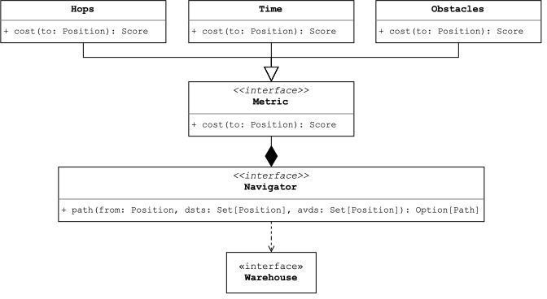
Problema Il calcolo dei percorsi deve supportare criteri di ottimizzazione differenti, selezionabili nella configurazione dello scenario. Occorre consentire questa variazione evitando di duplicare la logica di ricerca per ciascun criterio.
Soluzione Per risolvere il problema, è stato utilizzato il pattern Strategy per definire diverse metriche di ottimizzazione (Figura ). Il modulo di routing affida a Navigator la ricerca del percorso e richiede, passata come strategia, la metrica (Metric) per ottenere il costo (Score) da minimizzare.
Motore e timer della simulazione
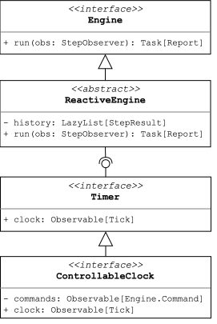
ReactiveEngine, che utilizza i tick forniti da Timer per gestire l’avanzamento della simulazione.Problema L’esecuzione della simulazione deve supportare l’avanzamento periodico, la pausa e la navigazione tra i passi. Occorre separare la gestione dei risultati dalla logica di temporizzazione e interpretazione dei comandi, consentendo di verificare i due comportamenti in modo indipendente.
Soluzione Per risolvere il problema, è stata utilizzata la composizione tramite mixin (Figura ). ReactiveEngine richiede il contratto Timer, che espone il flusso temporale della simulazione (Observable[Tick]). Il motore sfrutta tale flusso come indice per accedere ai risultati della simulazione, i quali vengono calcolati su richiesta e memorizzati per future ri-consultazioni, per poi notificarli all’osservatore. ControllableClock implementa Timer, traducendo il trascorrere del tempo e i comandi dell’utente nei tick da emettere. Questa separazione permette di testare il motore fornendo sequenze di tick controllate (quindi un’implementazione fittizia del Timer) e di verificare autonomamente la temporizzazione e la gestione dei comandi.
Simulazione e limite di tempo
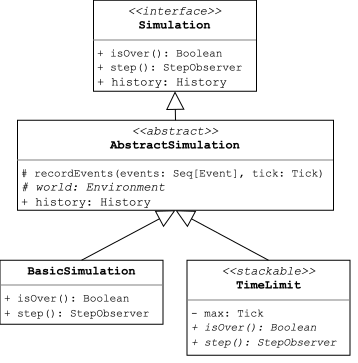
Problema La simulazione deve poter terminare quando tutte le missioni sono concluse oppure al raggiungimento di un limite massimo di tick. Occorre aggiungere questo vincolo opzionale senza duplicare la logica di avanzamento della simulazione.
Soluzione Per risolvere il problema, è stata utilizzata la composizione tramite stackable trait (Figura ). TimeLimit, quando composto con un’implementazione di Simulation, ne estende il comportamento di avanzamento, verificando se il limite di tick è stato raggiunto e, in tal caso, terminando la simulazione. È stata aggiunta la classe AbstractSimulation per condividere la registrazione degli eventi e l’accesso all’ambiente della simulazione tra le diverse implementazioni.
Calcolo delle celle di adiacenza
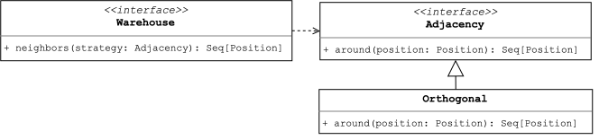
Problema Il calcolo delle celle adiacenti dipende dal requisito con cui si considerano vicine due posizioni. Occorre rendere facile modificare il significato di vicino in caso di cambiamenti nei requisiti.
Soluzione Per risolvere il problema è stato utilizzato il pattern Strategy (Figura ), fornendo Adjacency come strategia contestuale a Warehouse durante il calcolo dei vicini.
Collisioni
Pianificazione delle collisioni
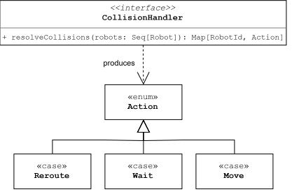
Problema: Mantenere il principio di singola responsabilità (SRP), riservando al solo modulo di simulazione l’aggiornamento dello stato dei robot. Di conseguenza, la fase di gestione delle collisioni deve limitarsi a determinare chi debba eseguire un’azione e quale azione compiere.
Soluzione: Seguendo il pattern Command (Figura ), sono state create una serie di Action (comandi), che definiscono cosa un robot devrà fare in una fase futura. Il CollisionHandler è la componente che ha il compito di assegnare una Action ad ogni robot durante la risoluzione delle collisioni, comportandosi quindi da agente pianificatore e senza cambiare lo stato della simulazione.
Configurazione delle collisioni
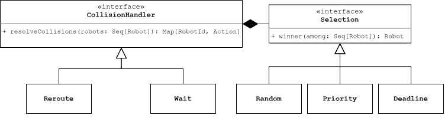
Problema: La gestione delle collisioni deve essere facilmente configurabile, separando i concetti di chi deve fare e di cosa deve essere fatto.
Soluzione: Sono state create due componenti fondamentali seguendo il principio di Separation of mechanism and policy (Figura ):
- La
SelectionPolicyè la componente che si occupa di scegliere chi vince (e chi perde) nelle dispute per una posizione. - Il
CollisionHandler, dopo aver ottenuto il risultato di una scelta dellaSelectionPolicy, definisce un’azione da compiere per ogni robot coinvolto nella collisione.
In questo modo, avendo CollisionHandler e SelectionPolicy, è possibile ottenere
Riusabilità dei risolutori
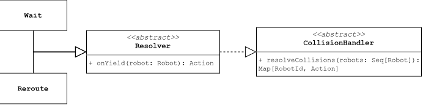
Resolver.Problema: CollisionHandler diversi eseguono le stesse operazioni di controllo delle collisioni, ma producono output (Action) differenti. Sarebbe quindi utile avere un risolutore base da poter poi raffinare.
Soluzione: Il Resolver è un CollisionHandler generico che permette di definire come calcolare il risultato (Action) finale per tutti i robot coinvolti nelle collisioni tramite un metodo onYield applicato al singolo robot che non è stato scelto come vincitore della collisione.
Serializzazione
Codifica e decodifica dei modelli di dominio
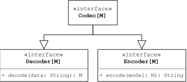
Codec.Problema: Si vuole creare un meccanismo per convertire i modelli di dominio in stringhe (e viceversa) al fine di ottenere un formato di rappresentazione facilmente memorizzabile o trasmissibile (JSON, XML, testo semplice). Occorre aggiungere tale funzionalità in modo indipendente dal dominio applicativo.
Soluzione: È stata sviluppata una type class Codec che unisce le funzionalità di un Encoder e di un Decoder, con l’obbiettivo di astrarre il comportamento di codifica e decodifica. Per poter codificare/decodificare un elemento di dominio è quindi necessario definire un Codec in grado di eseguire tali operazioni.
Rappresentazione del dominio e conversioni bidirezionali
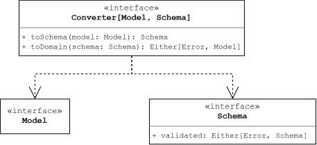
Converter.Problema: Si vuole disaccoppiare il modello di dominio dalle sue rappresentazioni esterne, isolandolo da eventuali modifiche al formato dei dati e viceversa. Per ottenere questa indipendenza, è necessario un meccanismo in grado di convertire gli elementi del dominio nella rispettiva rappresentazione e di ricostruirli a partire da essa.
Soluzione: È stata progettata l’interfaccia Schema, che definisce il contratto per la validazione e la modellazione dei dati su tipi primitivi. Infine, per evitare duplicazioni di codice (principio DRY) e preservare la separazione delle responsabilità, è stato introdotto il componente Converter. Ispirandosi al pattern Data Mapper, il Converter incapsula la logica di conversione bidirezionale tra le entità del dominio e i relativi Schema.
Codifica e decodifica json
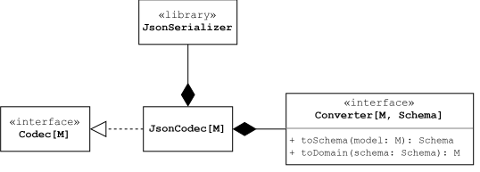
Converter e un sistema di serializzazione esterno dentro l’interfaccia Codec.Problema: Si vuole creare un sistema in grado di convertire modelli di dominio in stringhe in formato json e viceversa.
Soluzione: È stato creato un JsonCodec (Figura ) che permette di leggere e scrivere in formato json con una libreria esterna, trasformando i modelli di dominio in stringhe grazie all’utilizzo dei Converter, che vengono usati in due modalità:
- Lettura: una stringa in input viene trasformata in uno
Schema, che a sua volta viene convertito nel rispettivo modello di dominio. - Scrittura: un modello di dominio viene convertito in uno
Schemae poi trasformato in una stringa.
Persistenza
Lettura/scrittura dei dati su storage
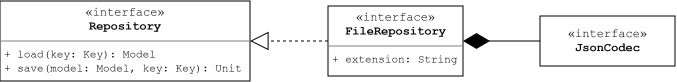
Codec).Problema: Si vuole creare un sistema in grado di leggere e scrivere dati in uno storage.
Soluzione: È stata creata l’interfaccia Repository, che rappresenta un punto di accesso ad uno storage (database, file system, etc.) con metodi di scrittura e lettura. Nel caso di Sentinel è stato scelto di utilizzare file json sul file system.
Missioni
Composizione delle attività
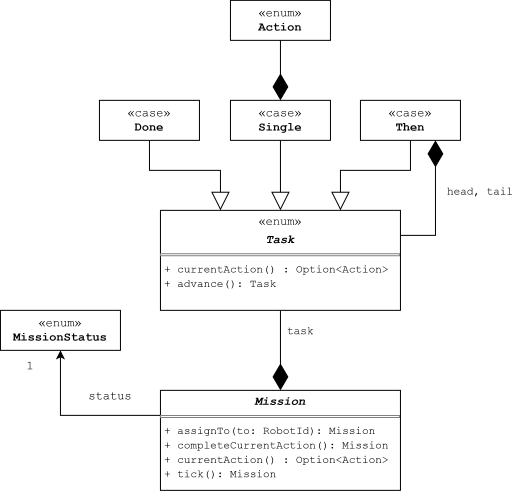
Problema: Rappresentare attività eterogenee senza proliferazione di sottoclassi, gestendone l’avanzamento per operazioni atomiche interrogabili.
Soluzione: Seguendo il pattern Composite (Figura ), Mission aggrega un Task(Action) articolato in Single, Then e Done, con stato (Pending, Assigned, Completed, Failed) gestito secondo il pattern State in forma funzionale e immutabile.
Assegnazione delle missioni
Selezione del candidato
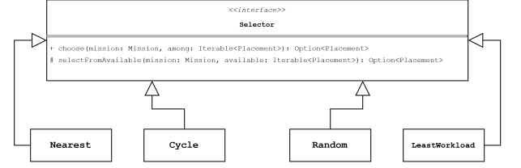
Nearest, Cycle, LeastWorkload e RandomSelector implementano la propria versione del metodo selectFromAvailable.Problema: Valutare i candidati secondo criteri diversi senza alterare la logica di filtraggio e assegnamento.
Soluzione: Attraverso il pattern Template Method (Figura ), il trait Selector definisce l’algoritmo di selezione nel metodo choose, che prima filtra i robot idonei tramite canAccept e poi delega la scelta finale a selectFromAvailable. Quest’ultimo viene personalizzato dalle varie strategie concrete: Nearest, Cycle, LeastWorkload e RandomSelector.
Tile
Tipologie di celle
Problema: La griglia deve modellare celle con proprietà eterogenee, combinabili in modo flessibile ed estendibile.
Soluzione: Seguendo il principio di segregazione delle interfacce (Figura ), la gerarchia è definita dal trait Tile con i mixin Walkable e Interactable. Le tipologie concrete (Floor, Shelf, LoadingBay) combinano solo i tratti necessari secondo la propria semantica di dominio.
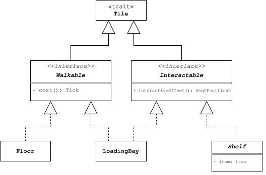
Robot
Decorazione delle funzionalità
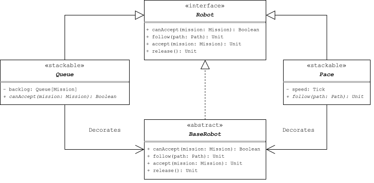
Problema: Variare il comportamento su aspetti ortogonali senza esplosione combinatoria di sottoclassi.
Soluzione: Con intento analogo al pattern Decorator ma con composizione statica (Figura ), i tratti Pace e Queued estendono Robot e ne decorano i metodi (follow, accept, release) tramite abstract override, combinati per mixin (new Drone with Queued with Pace).
Fattorizzazione della logica comune
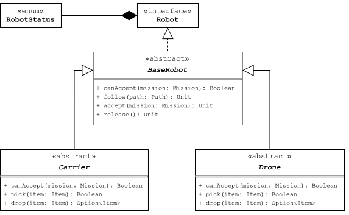
Problema: Tipologie distinte condividono movimento, avanzamento temporale e transizioni di stato, senza duplicazione della logica.
Soluzione: Seguendo il pattern Template Method (Figura ), la classe astratta BaseRobot centralizza navigazione e stato interno, mentre le sottoclassi concrete forniscono solo la logica specifica della propria natura.
Sviluppo
Test automatizzati
Per garantire il corretto funzionamento del progetto e prevenire regressioni, è stata sviluppata una suite di test automatizzati basata su scalatest.
Per uniformare la struttura dei test e favorire uno stile di scrittura più dichiarativo e leggibile, è stata definita una classe base UnitTest che racchiude le configurazioni comuni e le utility di supporto. Inoltre, per isolare i componenti da testare e simulare dipendenze complesse senza dover ricorrere a dati reali di inizializzazione, è stato integrato mockito.
Note di sviluppo
Cecchini Andrea
Utilizzo del pattern Strategy
Utilizzo di Observable e Task
Utilizzo di self-type
Utilizzo di LazyList
Utilizzo di stackable traits
Utilizzo di opaque types
Forti Mattia
Utilizzo di type classes
Utilizzo di module types
Utilizzo di context bounds
Utilizzo di for-comprehension
Utilizzo del pattern adapter con libreria upickle
Marcaccio Leonardo
Utilizzo di opaque types
Utilizzo di Algebraic Data Types
Utilizzo del pattern Fine State Machine
Utilizzo di stackable traits
Applicazione del principio di Interface Segregation
Utilizzo di alias con export
Metodologia di sviluppo
Per la gestione del progetto è stato adottato il framework agile Scrum. Il carico di lavoro complessivo è stato strutturato su 4 settimane da 15 ore ciascuna (per ogni membro), precedute da due giornate dedicate ad una breve pianificazione iniziale e alla configurazione del repository.
Sono stati eseguiti brevi meeting giornalieri ogni mattina, con eventuali meeting aggiuntivi su richiesta durante la giornata per chiarimenti riguardanti dominio, scoperte di bug e/o semplici richieste di approvazione di pull request.
All’inizio di ogni settimana è stato definito lo Sprint Backlog settimanale, individuando un obiettivo di release chiaro e dividento i task tra i componenti del team.
Workflow e gestione della repository
La gestione delle versioni sul repository GitHub ha seguito il modello di GitFlow.
La repository è stata inizializzata a partire da un template sviluppato dal team, già integrato con sistemi di Continuous Integration (CI) e versionamento automatico. Per lo sviluppo delle singole funzionalità, ciascun membro ha operato sulla propria fork del progetto.
La pipeline di CI, configurata tramite sbt, esegue controlli automatici a ogni push o pull request verso i branch main e develop. In particolare, vengono verificati:
- Errori di compilazione
- Errori di stile usando scalafmt
- Test coverage usando sbt-scoverage con upload dei report su codecov
Inoltre, a ogni push sul branch main, viene attivato il workflow di release nel quale si creano gli archivi .jar e rilasciata la documentazione relativa alla nuova release. Inoltre, un bot aggiorna la versione del progetto nel file build.sbt (generando il relativo commit).
Per garantire la qualità del codice e favorire il confronto sulle scelte implementative, ogni pull request ha richiesto l’approvazione di almeno un revisore distinto dall’autore. Le pull request verso il branch develop sono state integrate tramite squash and merge, in modo da mantenere una cronologia dei commit lineare e pulita; al contrario, l’integrazione su main è avvenuta tramite merge standard, preservando la cronologia di develop fondamentale per il calcolo automatico della nuova versione.
Commenti Finali
Retrospettiva
Sprint 1
Obiettivo dello sprint
Distribuire un prototipo del sistema in cui un robot, posizionato in un magazzino libero da ostacoli, fosse in grado di ricevere e completare una missione di navigazione verso una destinazione specifica.
Analisi
Nonostante fosse la prima settimana e le stime iniziali potessero essere non precise, siamo riusciti a completare l’obiettivo dello sprint.
I workflow di CI e release implementati la settimana precedente ci hanno permesso di arrivare al rilascio del prototipo in modo rapido e senza intoppi.
È probabile che settimana prossima sia necessario rivedere il design di alcuni elementi di dominio.
Per quanto riguarda i PBI nei quali si prevede la possibilità di modellare il magazzino e lo scenario con varie configurazioni, è stato deciso di non implementare inizialmente la parte grafica per dare spazio al core del sistema.
Sprint 2
Obbiettivo dello sprint
Distribuire un prototipo del sistema che consenta a più robot di muoversi all’interno di un magazzino privo di ostacoli, ricevendo ed eseguendo missioni di navigazione verso destinazioni specifiche ed evitando le collisioni reciproche.
- I robot attendono un numero di unità temporali pari al costo della posizione successiva prima di effettuare il movimento.
- Introduzione della politica di calcolo del percorso che minimizza il tempo totale necessario per raggiungere la destinazione.
- Implementazione della politica di assegnazione ciclica delle missioni tra i robot disponibili.
- Sviluppo di un sistema di collision avoidance basato su una politica di attesa casuale.
Analisi
L’obiettivo è stato raggiunto con successo, ma le stime da affinare. Per paura di non farcela abbiamo sovrastimato le tempistiche e pianificato meno task del potenziale.
Di conseguenza, il carico di lavoro sarà maggiore per i due sprint successivi.
Sprint 3
Obbiettivo dello sprint
- Aggiungere al prototipo precedente le rimanenti politiche di selezione del vincitore delle collisioni:
- Robot con missione con priorità più alta
- Robot con missione più vicina alla scadenza
- Creare un sistema di serializzazione per scenario e warehouse per poter salvare i dati dentro a file
json. - Aggiungere priorità sulle missioni
- Aggiungere gli oggetti e gli scaffali
- Aggiungere comandi alla GUI: avanti, indietro, pausa, play
- Aggiungere le statistiche a fine simulazione
Analisi
Nonostante il carico di lavoro elevato, l’obbiettivo è stato raggiunto ma con qualche difficoltà a causa di problemi tecnici fuori dal nostro controllo che hanno rallentato lo sviluppo (outage di GitHub e problemi con la rete WIFI universitaria).
Si prevede uno sprint finale bilanciato con tempo dedicato alla finalizzazione della documentazione.
Sprint 4
Obbiettivo dello sprint
- Aggiungere la gestione delle collisioni tramite rerouting, le politiche di assegnazione tramite scelta casuale e editor per la configurazione di magazzino e scenario.
- Finalizzare la documentazione
Analisi
Le funzionalità di dominio sono state completate come previsto con qualche giorno di anticipo dalla data di consegna, lasciando tempo per il completamento della documentazione (sia il report che la scaladoc) e qualche piccola rifinitura del codice.
Conclusioni
È stato un progetto complesso da realizzare, ma ci riteniamo soddisfatti del risultato. Se dovessimo fare aggiunte in futuro le scelte primarie sarebbero di aggiungere più classi di robot, più tipologie di missioni e una grafica più visivamente appagante.